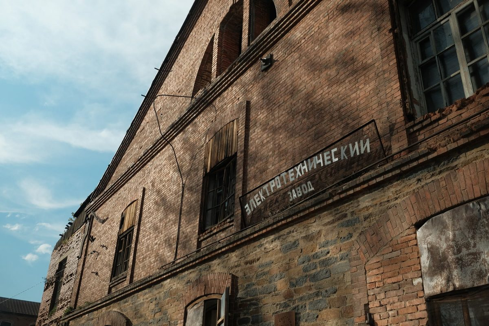

Сысерть
Сысерть выросла вокруг заводов. Сначала здесь плавили железо, потом создавали фарфор и электромоторы. Мы записали живописцев, отливщиц, печника, обмотчиц и снабженца. Они рассказали про цеха, праздники, девяностые и про то, что осталось от заводов сегодня.
Листать журналГерои выпуска
Андрей Бородулин
«На этом заводе в самые лучшие годы работало от 700 до 800 человек.»
отливщицаЛюдмила Деменьшина
«Это как дом родной. Дом родной, мне кажется, на втором месте, а это на первом месте. Считай, все равно больше половину времени мы здесь проводили и…»
работал на обжигеВиктор Крушинский
«На обжиг уходило часов 24. Сначала постепенный нагрев, часов 12, потом усиленный подъём температуры. Внутрь печи заглядывали через перископы. Их…»
снабженецНиколай Бондаренко
«Помню, он как-то день рождения праздновал. Говорит, Коля, пойдем, я тебе покажу. Я зашёл, а у него на полу в мастерской были разложены детали камина.…»
заборщицаФаина Ваганова
«Денег не давали по полгода. Приходилось выписывать продукцию, продавать ее, чтобы деньги, наличка была. Трудное время было очень.»
работница фарфорового заводаГалина Мостовых
«Проводили там вечера нашего цеха. Один раз на праздник заявились местные жители, там я и познакомилась со своим мужем. Да, был просто такой осенний…»
работница заводаЛюбовь Оглоблина
«Директор комсомолец, он вот одобрил на производстве свадьбу. О, это без проблем, говорит. И все, мы на заводе это отмечали, в нашей столовой свадьбу.»
живописецЕлена Зайцева
«У нее он на парадном месте стоял. Его же Ленка сделала, такая гордость была, она всем рассказывала.»
живописецМарина Алексеева
«Папа мне сделал сервиз кофейный. Назвал его Марина. Подарил мне на 17 лет. Такой нежненький, чашечки маленькие, золото поверху, ободочек в три ряда.…»
потомок гончаровВладимир Харитонов
«Там посуда, вся гончарная продукция, все папина. Когда приходишь в музей, смотришь, это папина. Это прямо заметно. У каждого мастера своя форма.»
живописецЛюдмила Аникина
«Я приходила к людям и видела свои сервизы у них. В больницу, например, пришла, там ваза стоит. У нас же все изделия индивидуальные были, поэтому я…»
живописец и преподавательТамара Ледкова
«Я стала отсортировывать фотографии завода художественного фарфора, и вот часа два, наверное, я сидела, и поплакала, и полюбовалась своими деточками.»
директор заводаНаталья Жердева
«Это полностью ручное изделие — и в заливке, и в росписи. Это дает массу тактильных и визуальных ощущений, которые в сумме меняют повседневность,…»
электрообмотчицаЗинаида Мотавкина
«Если вот у меня директор детского дома умер, мне надо было на похороны пойти, меня не отпустили. Они говорят, если твою норму сделают девочки,…»
работница электротехнического заводаЛидия Ивановна
«Я здесь родила и первого, и второго ребенка. С мужем тоже на заводе познакомилась. Он мой комсомолец, я была секретарь комсомольской организации, он…»
начальник отдела кадровТатьяна Сибура
«Придут. Рев был сумасшедший. Всю жизнь проработали. А куда? Работы нет.»